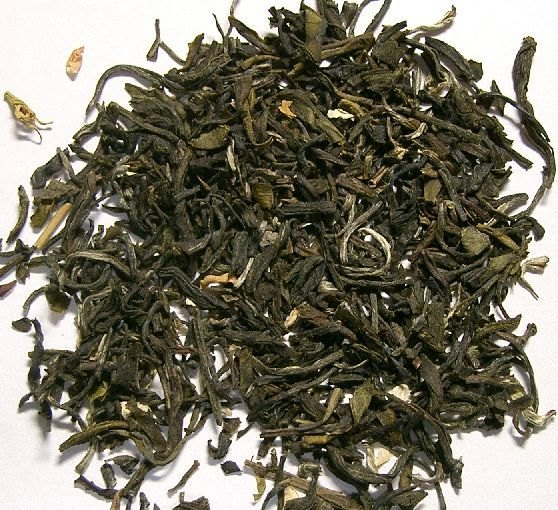
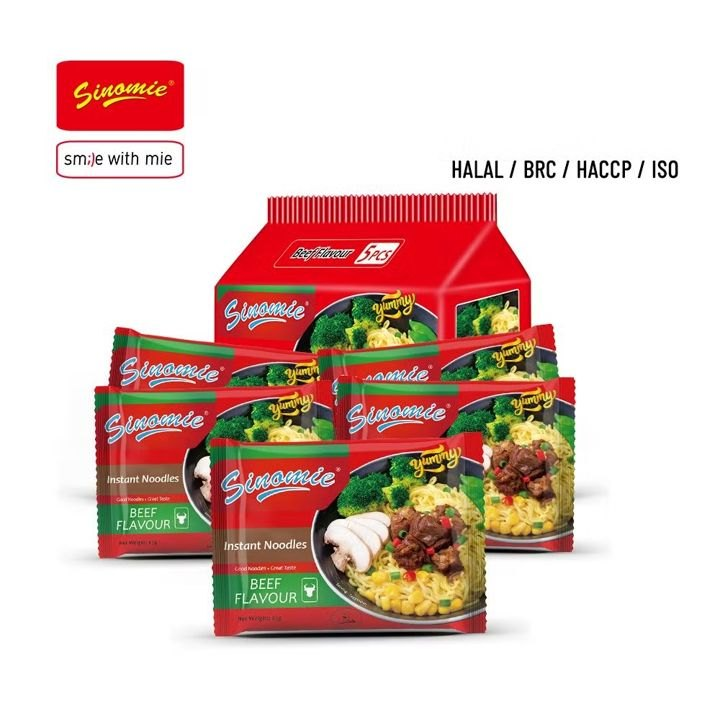
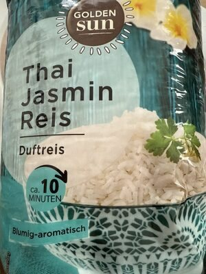
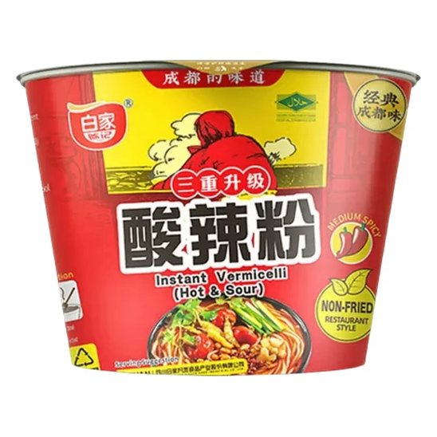
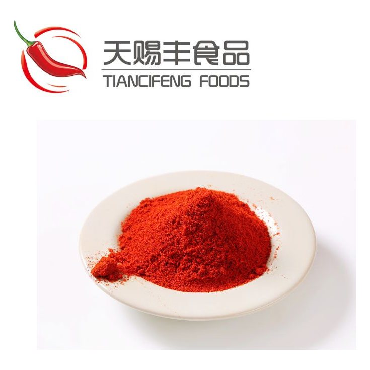
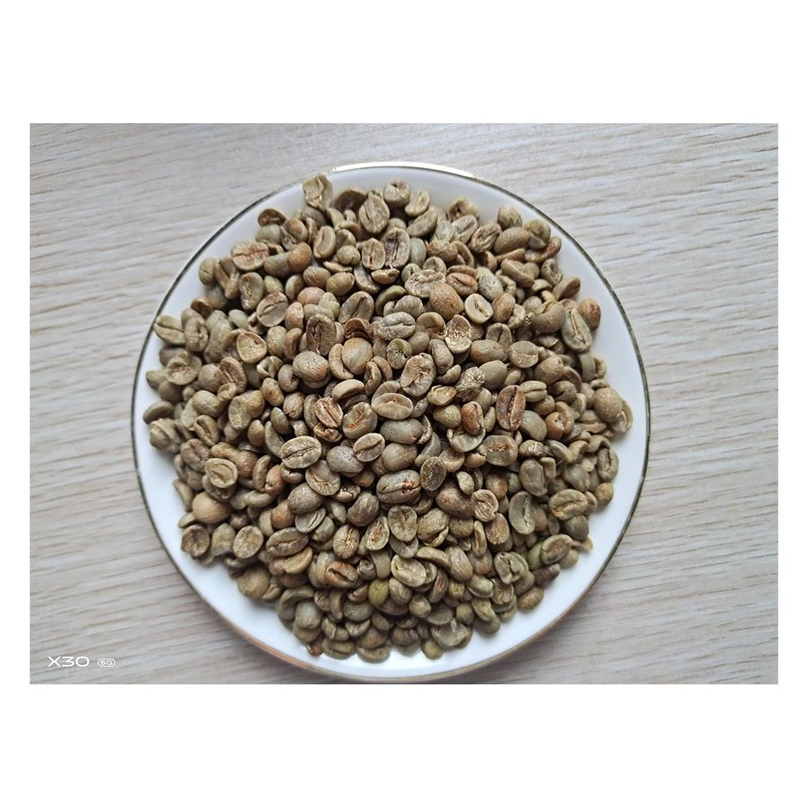
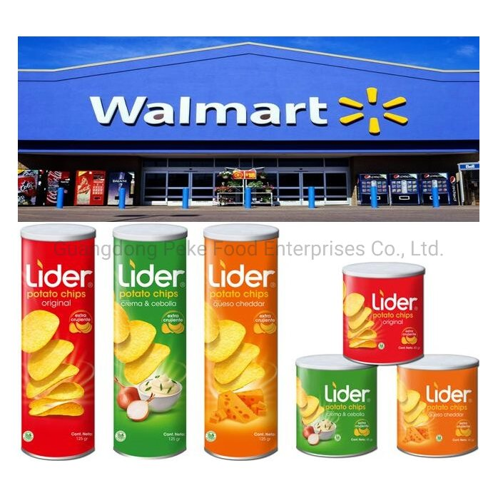
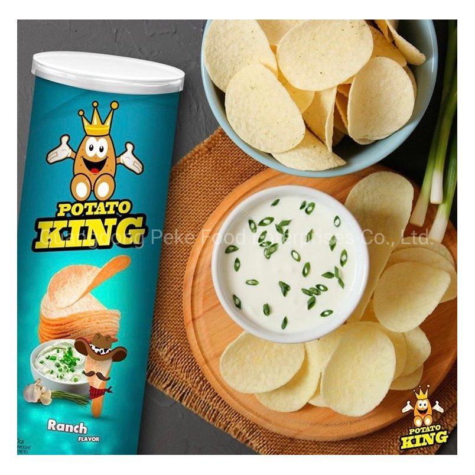

首页 / 食品与便利食品
食品与便利食品
17 个产品

茉莉绿茶 （散装）

红烧牛肉味方便面 （袋装, 约105克）袋装牛肉味方便面，工地快捷热食，只需热水冲泡。

米饼 （仙贝风味），袋装

即饮茶饮料 （PET瓶装, 500毫升）500毫升PET瓶装即饮茶饮料，用于工地饮品供应。

茉莉香米 （白色长粒米），5-25公斤袋装袋装白色长粒香米，用于工地后勤、食堂及再分装。

瓶装饮用水 （无气, PET瓶0.5升）0.5升PET瓶装无气饮用水，用于工地团队的饮水供应。

三合一速溶咖啡 （条装/袋装）由咖啡、乳制品成分和白糖调配的速溶咖啡，适用于休息室、工地茶水间和食堂。

茉莉龙珠 （手工卷制绿茶, 100克罐装/袋装）以嫩芽手工卷制、用茉莉花窨制的茶珠：高于散装茉莉绿茶的高端款。

酸辣粉 （玉米/红薯淀粉, 碗装约105克）碗装方便粉丝，配四川酸辣调味和独立辣椒油包：不含肉汤的方便面潮流变体。

罐装切块番茄 400克

醋渍小黄瓜 （玻璃罐）醋渍迷你黄瓜3–6厘米，400–850克玻璃罐。

番茄酱 （500克PET挤压瓶）

巧克力威化棒 （夹心），整箱夹心巧克力/榛子威化棒，独立包装。

甜红椒粉，散装 （60–260 ASTA色价）按ASTA色价分级的红椒粉，按吨供货。

云南阿拉比卡烘焙咖啡豆

玉米片 （筒装）

筒装薯片 （160克）